Thank you for purchasing our theme. If you have any questions that are beyond the scope of this help file, please feel free to email via our user page contact form or to our support forum at
Most of the questions are already answered in the FAQ's:
Due to local security restrictions, some things will not work locally, especially in Chrome. But everything will work once the files have been updated to your website.
Use Firebug or Chrome Developer Tools.
Do not start from scratch, use an existing page from the demo and modify it to learn how it works.
Getting an error message? Someone might have seen it too, try a google search for a quick fix.
Explore the live demo for pages ideas and sample code.
/HTML
/css (Template CSS)
/fonts (Font Faces, Font Awesome, etc..)
/img (All Images)
/js (Template JS)
/views (JS to run in specific pages. I.E: Home or Contact Us)
You can find all initializing codes in js/scripts.js.
1) Example: Changing the "shop product slider animation:" from slide to fade
/* Shop Product Slider */
$('.shop-product-slider').flexslider({
animation: "slide",
controlNav: "thumbnails",
prevText: "",
nextText: "",
smoothHeight: true
});
To
/* Shop Product Slider */
$('.shop-product-slider').flexslider({
animation: "fade",
controlNav: "thumbnails",
prevText: "",
nextText: "",
smoothHeight: true
});
You can find all the available plugins and partials in the file js/scripts.js as you can see here:
/*************************************************/ /* TEMPLATE FEATURES */ /*************************************************/ /* Element Features */ enableStickyHeader(); // Sticky Header enableHoverStickyHeader(); // Hover Sticky Header enableMobileNav(); // Mobile Navigation enableFlexSlider(); // Flexslider - Slider Plugin enableAccordions(); // Accordions enableTabs(); // Tabs enableProgressbars(); // Progressbars enableCircularProgressbars(); // Circular Progressbars ... ...
The template is based on Bootstrap 3 Framework - http://getbootstrap.com
Bootstrap includes a responsive, mobile first fluid grid system that appropriately scales up to 12 columns as the device or viewport size increases.
<div class="row">
<div class="col-md-12">
Level 1 column
<div class="row">
<div class="col-md-6">Level 2</div>
<div class="col-md-6">Level 2</div>
</div>
</div>
</div>
If you need more information, please visit this site: http://getbootstrap.com/css/#grid
To change the embedded font, please take a look in the head part of the website and you will find this tag:
<link href="http://fonts.googleapis.com/css?family=Open+Sans:300,400,600,700,800|Shadows+Into+Light" rel="stylesheet" type="text/css">
To change the font, first go to http://www.google.com/webfonts choose a font and use the generated code.
Font Awesome is a @font-face iconset that you can change size and color of the icons using CSS.
If you need more information, please visit this site: http://fontawesome.io/
<i class="fa fa-edit"></i> <i class="fa fa-search"></i> ...
This is one of the best slider plugins we have seen so far.
"Slider Revolution is a fully developed slide displaying system offering the capability to show images, videos and captions paired with simple, modern and fancy 3D transitions. On top of that, Slider Revolution is fully responsive and mobile optimized and can take on any dimensions."
More details on http://themes.themepunch.com/?theme=revolution_jq
And the other sliders are powered by flexSlider.
More details on http://www.woothemes.com/flexslider/
Marine provides 11 different header styles. If you want to use any of them just use our premade demos. For instance if you want use header style 1 the only thing you need to do is copy our premade demos and use it everywhere you want.
Header have three parts. upper-header contains links, shopping cart and so on.
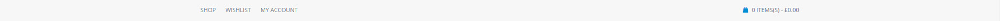main-header contains top bar stuffs like logo, call information and social links.
And lower-header contains main site navigation.
<header id="header" class="style1"> <div id="main-header"> <div class="container"> <div class="row"> <!-- Logo --> <div class="col-lg-4 col-md-4 col-sm-4 logo"> <a href="#" title="Marine" rel="home"><img class="logo" src="img/marine-logo.png" alt="Marine"></a> <div id="main-nav-button"> <span></span> <span></span> <span></span> </div> </div> <div class="col-sm-8 align-right"> <!-- Text List --> <ul class="text-list"> <li>Call Us: +1 800 450 17 08</li> </ul> <!-- Social Media --> <ul class="social-media"> <li><a target="_blank" href="http://facebook.com"><i class="icon-facebook"></i></a></li> <li><a target="_blank" href="http://twiiter.com/google"><i class="icon-twitter"></i></a></li> <li><a target="_blank" href="http://google.com"><i class="icon-google"></i></a></li> <li><a target="_blank" href="http://linkedin.com"><i class="icon-linkedin"></i></a></li> <li><a target="_blank" href="http://instagram.com"><i class="icon-instagram"></i></a></li> </ul> </div> </div> </div> </div> <!-- /Main Header --> <!-- Lower Header --> <div id="lower-header"> <div class="container"> <div class="row"> <div class="col-lg-12 col-md-12 col-sm-12"> <div class="lower-logo"> <a href="#" title="Marine" rel="home"><img class="logo" src="img/marine-logo.png" alt="Marine"></a> </div> <!-- Main Navigation --> <ul id="main-nav" class="menu"> <li class="menu-item current-menu-ancestor current_page_ancestor menu-item-has-children"><a href="#">Demos</a> <div class="mega-menu"> <ul class="sub-menu"> <li><span>MARINE</span> <ul class="sub-menu"> <li class="menu-item current-menu-item page_item current_page_item"><a href="index.html/">Marine Layout</a> <li class="menu-item"><a href="index-seo.html">Seo Agency Layout</a> <li class="menu-item"><a href="index-business.html">Business Layout</a> <li class="menu-item"><a href="index-business2.html">Business Layout 2</a> <li class="menu-item"><a href="index-creative.html">Creative Layout</a> </ul> <li><span>HELMER</span> <ul class="sub-menu"> <li class="menu-item"><a href="#">Architteti Layout</a> <li class="menu-item"><a href="#">Corporation Layout</a> <li class="menu-item"><a href="index-creative-light.html">Creative Light</a> <li class="menu-item"><a href="index-food.html">Restaurant Layout</a> <li class="menu-item"><a href="#">Fashion Layout</a> </ul> <li><span>NOMINEL</span> <ul class="sub-menu"> <li class="menu-item"><a href="#">Motors Layout</a> <li class="menu-item"><a href="#">Medical Layout</a> <li class="menu-item"><a href="index-freelancer.html">Freelancer Layout</a> <li class="menu-item"><a href="#">Parallax Layout</a> </ul> </ul> <div class="mega-menu-footer"> <img src="img/marine-logo-menu-light.png" alt=""> <span>- Choose <strong>Your Style</strong></span> </div> </div> </li> ..... ..... ..... ..... </ul> <!-- /Main Navigation --> </div> </div> </div> </div> <!-- /Lower Header --> </header>
So with this codes you will have a nice header like this
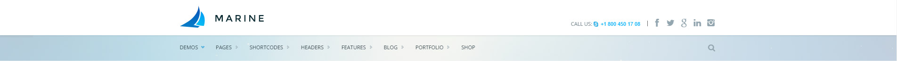Also there's some additional classes you need to know.
<li class="menu-item current-menu-ancestor menu-item-has-children"><a href="#">Demos</a>
First of all for menu-item-has-children is to show the visitor this menu item has sub menu. And current-menu-ancestor is obviously for showing which menu is activated
<li class="menu-item current-menu-item"><a href="index.html/">Marine Layout</a>
And for sub menus there's current-menu-item class which highlight the active page.
Also it's important to give proper class to body. For example if you want to use main page header you need to give a class of headerstyle1 to the body
<body class="w1170 headerstyle1">
As we said use our premade demos. So just checkout what class we give to the body and apply it to yours.
Marine supports AJAX contact forms which no needs to reload the page when a form submitted. So, for defining your email or any recipient email go to filephp/contact.php and from line 4 to 6 you can define your name, email and subject.
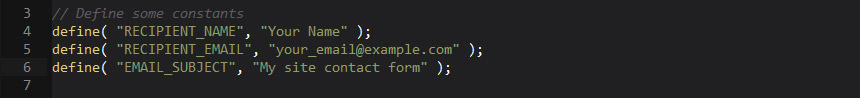Marine also supports AJAX subscribe forms which no needs to reload the page when a form submitted. All subscribe forms are powered by Mailchimp. So go to Mailchimp, sign up, and login to your account.
For using subscribe form you need 3 things here:
To get your API Key go to your account settings and click on Extras and then select API Keys.
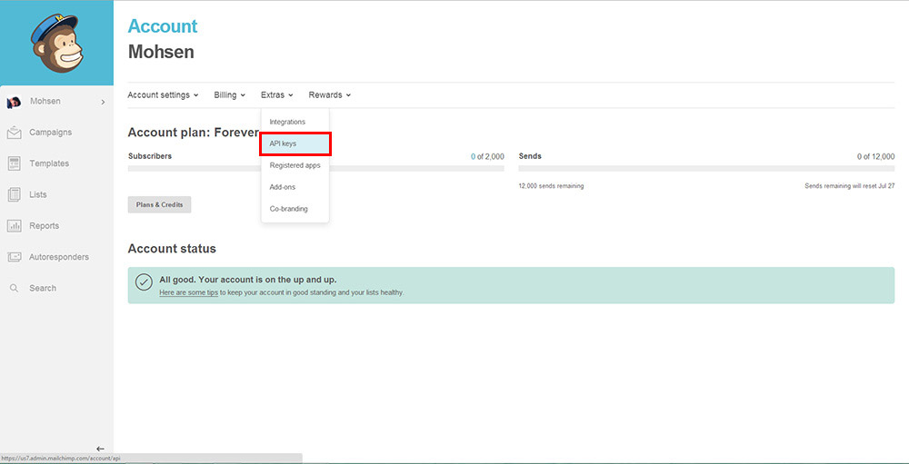From Your API Keys section click on Create A Key and it'll create an API Key
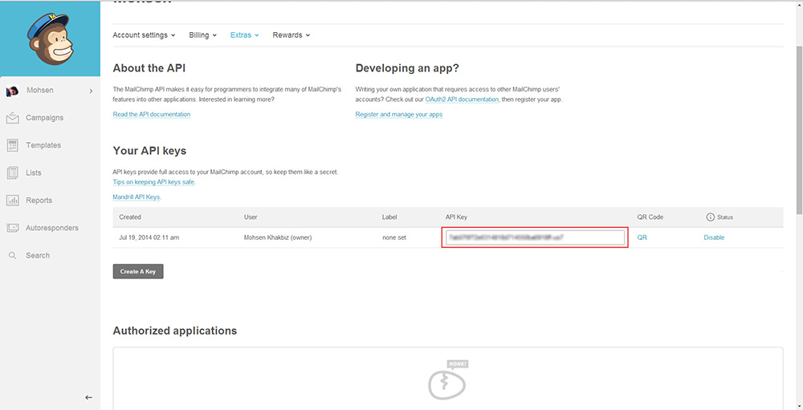From php folder, open subscribe.php and paste your API Key in line 2.
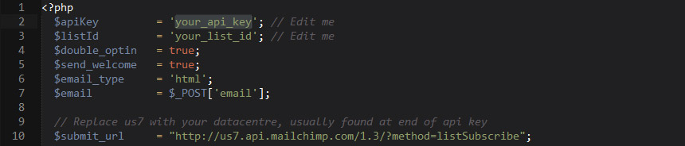To get List Id you need to create a list. Create it an then from Lists menu click the list's drop down menu and select Settings.
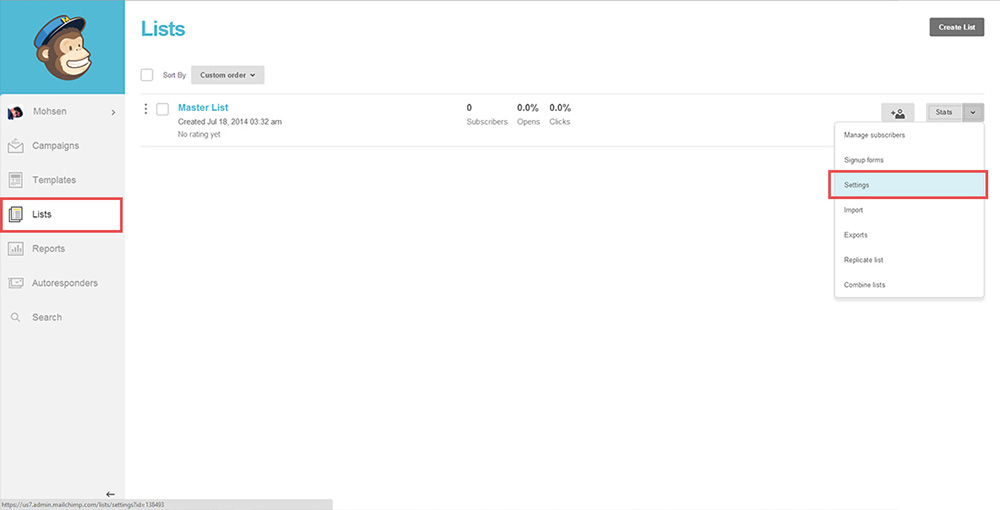Scroll down to the bottom of the Settings page to find the unique List ID for the list.
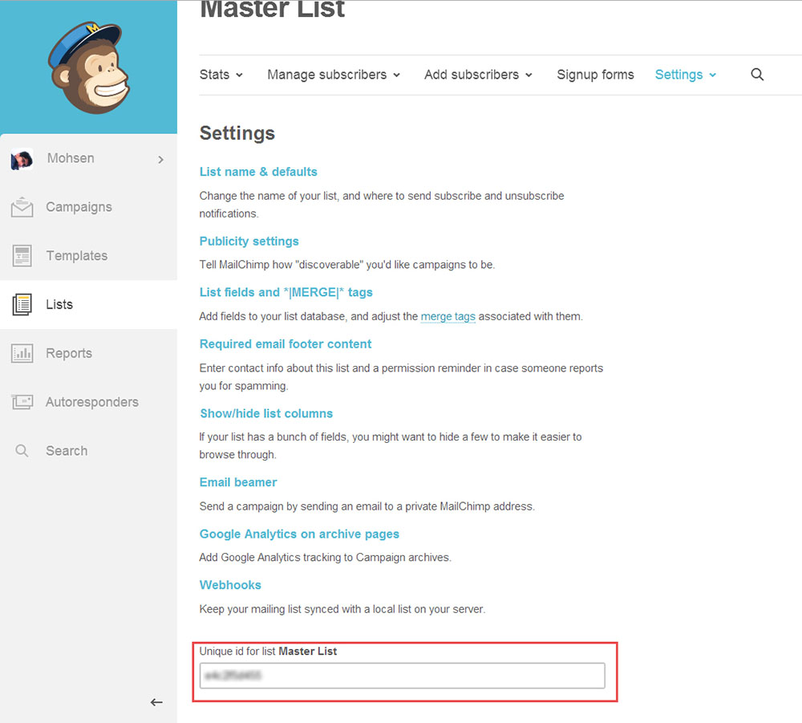Copy your list ID and then go to php folder, open subscribe.php and paste it in line 3
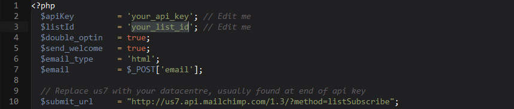Finally you need your datacenter which is usually at the end of API Key. So replace it with us7 in line 10.
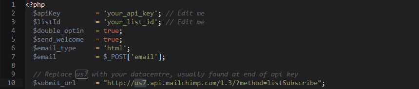To bring your twitter feed alive you need to get your own consumer key and secret keys. Go to apps.twitter.com/. Login to your account and hit Create New App button. Fill required fields and hit Create your Twitter application.
Go to Keys And Access Tokens tab. Copy your Consumer Key and Consumer Secret
. 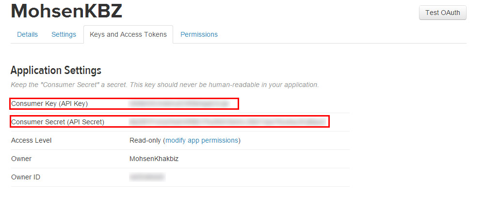Go to php/twitter-feed folder and open config.php. Paste your Consumer Key and Consumer Secret in line 7 and 8.
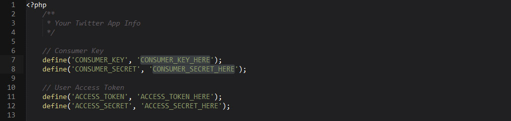Scroll down to Your Access Token section. Hit Create my access token button. Copy Access Token and Access Token Secret.
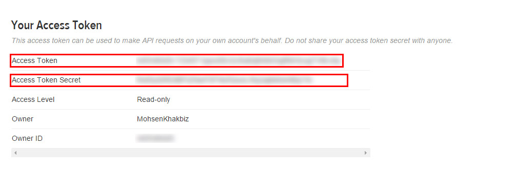Again open config.php from php/twiter-feed folder. Paste your Access Token and Access Token Secret in line 11 and 12
. 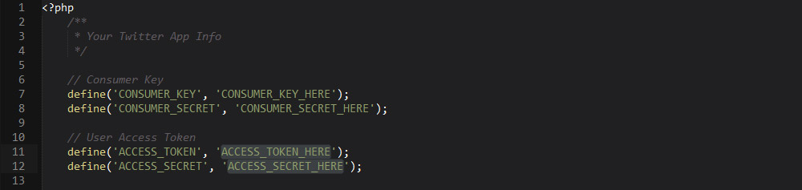The filter is driven by prettyPhoto script.
For more information check the documentation.
http://www.no-margin-for-errors.com/projects/prettyphoto-jquery-lightbox-clone/
The filter is driven by the Mixitup script - https://mixitup.kunkalabs.com//
Here's an example of usage:
<div class="sorting-tags style2"> <div class="filter" data-filter="all">All</div> <div class="filter" data-filter=".category-business">Business</div> <div class="filter" data-filter=".category-food-2">Food</div> <div class="filter" data-filter=".category-print">Print</div> <div class="filter" data-filter=".category-seo">SEO</div> <div class="filter" data-filter=".category-video">Video</div> <div class="filter" data-filter=".category-web">Web</div> </div>
<div class="row projects-container"> <div class="col-lg-4 col-md-4 col-sm-4 mix category-business"> <div class="project light"> <div class="project-image"> <img src="img/2-small.jpg" alt="Team Spirit"/> <div class="project-hover"> <a class="link-icon" href="#"></a> <a class="search-icon prettyPhoto" href="img/2-original.jpg"></a> </div> </div> <div class="project-meta"> <h4>Team Spirit</h4> <span class="project-category">Print</span> <div class="project-like" data-post="3820"> <i class="icons icon-heart-7"></i> <span class="like-count">176</span> </div> </div> </div> </div> .... .... .... </div>
The images included in preview are for demonstration purposes and should always be replaced with your own work.
Fonts:
Google Fonts - http://www.google.com/webfonts
Icons Font-face - http://fontawesome.io/
Scripts:
jQuery - http://www.jquery.com/
Bootstrap 3 - http://getbootstrap.com/
Revolution Slider - http://codecanyon.net/item/slider-revolution-responsive-jquery-plugin/2580848
Modernizr - http://modernizr.com/
jQuery UI - http://jqueryui.com
jQuery Easing v1.3 - - http://gsgd.co.uk/sandbox/jquery/easing/
fancyBox - - http://fancyapps.com/fancybox/
fitVids - - http://css-tricks.com
fitVids - - http://css-tricks.com
FlexSlider - - http://www.woothemes.com/flexslider/
Knob - - http://anthonyterrien.com/knob/
Masonry - - http://masonry.desandro.com
MixItUp - - https://mixitup.kunkalabs.com
jQuery mouseWheel - - http://brandonaaron.net
noUiSlider - - http://refreshless.com/nouislider/
jQuery placeholder - - http://mths.be/placeholder
Sharrre - - http://sharrre.com/
jQuery validity v1.4.6 - - http://validity.thatscaptaintoyou.com/
jQuery WOW - - http://mynameismatthieu.com/WOW/
jQuery masonry - - http://masonry.desandro.com/
perfect-scrollbar - - http://noraesae.github.com/perfect-scrollbar
retina.js - - http://retinajs.com
SmoothScroll - - https://github.com/kswedberg/jquery-smooth-scroll
Tweetie - - https://github.com/sonnyt/Tweetie
Once again, thank you so much for purchasing this template. As I said at the beginning, I'd be glad to help you if you have any questions.
Social Media - Icons
You can use social icons which fontAwesome provides. So if you want to add a twitter icon you need to add a class of fa following fa-twitter.
Example of adding social icons:
Here's the css classes of the available social media icons in the template: